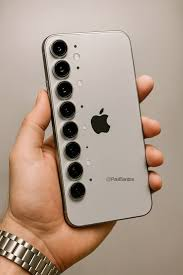

Iphone 18 é anunciado
data:
Apple anuncia novo lançamento de smartphone da linha Iphone, e promete ser revolucionario
Steve Jobbs afirma que o novo Iphone 18 é o melhor dispositivo movel ja criado na historia

leia mais
A Apple anunciou oficialmente o novo iPhone 18, trazendo um design ainda mais futurista e sem nenhuma porta física. O aparelho conta com uma tela holográfica avançada e bateria que dura até três dias de uso intenso. Entre as novidades, está uma inteligência artificial integrada capaz de antecipar ações do usuário. A câmera foi aprimorada, permitindo fotos em qualidade cinematográfica mesmo em ambientes com pouca luz. O lançamento gerou grande expectativa e promete ser um dos mais inovadores da história da marca.
nova ia lançada
data:
uma nova inteligência artificial foi criada.
grande avanço tecnológico
leia mais
eUma nova inteligência artificial chamada NeuroMind X foi anunciada por uma startup inovadora do Vale do Silício. A tecnologia promete aprender em tempo real, adaptando-se ao comportamento humano com precisão inédita. Diferente das anteriores, ela consegue tomar decisões complexas sem necessidade de comandos diretos. Especialistas afirmam que a IA pode revolucionar áreas como medicina, educação e programação. O lançamento já está gerando debates sobre os limites e impactos dessa nova geração de inteligência artificial.
Noticias Gerais
SPFC ganha do Cruzeiro por 4x1
data:
SPFC maior clube de futebol do Brasil vence do Cruzeiro la no morubis com hatrick de Ferreirinha nesse sábado
Ferreirinha marca um Hatrick para confirmar a vitoria do SPFC
leia mais
O São Paulo FC venceu o Cruzeiro EC por 4x1 no Morumbi pelo Brasileirão Série A. O jogo começou intenso, com gol de pênalti de Jonathan Calleri. O grande destaque foi Ferreira, que marcou três gols. Mesmo com mais posse de bola, o Cruzeiro foi pouco eficiente e falhou na defesa. Com o resultado, o São Paulo segue em boa fase, enquanto o Cruzeiro continua irregular.
evento mundial
data:
evento reúne vários países.
importante encontro
leia mais
O São Paulo FC venceu o Cruzeiro EC por 4x1 no Morumbi pelo Brasileirão Série A. O jogo começou intenso, com gol de pênalti de Jonathan Calleri. O grande destaque foi Ferreira, que marcou três gols. Mesmo com mais posse de bola, o Cruzeiro foi pouco eficiente e falhou na defesa. Com o resultado, o São Paulo segue em boa fase, enquanto o Cruzeiro continua irregular.